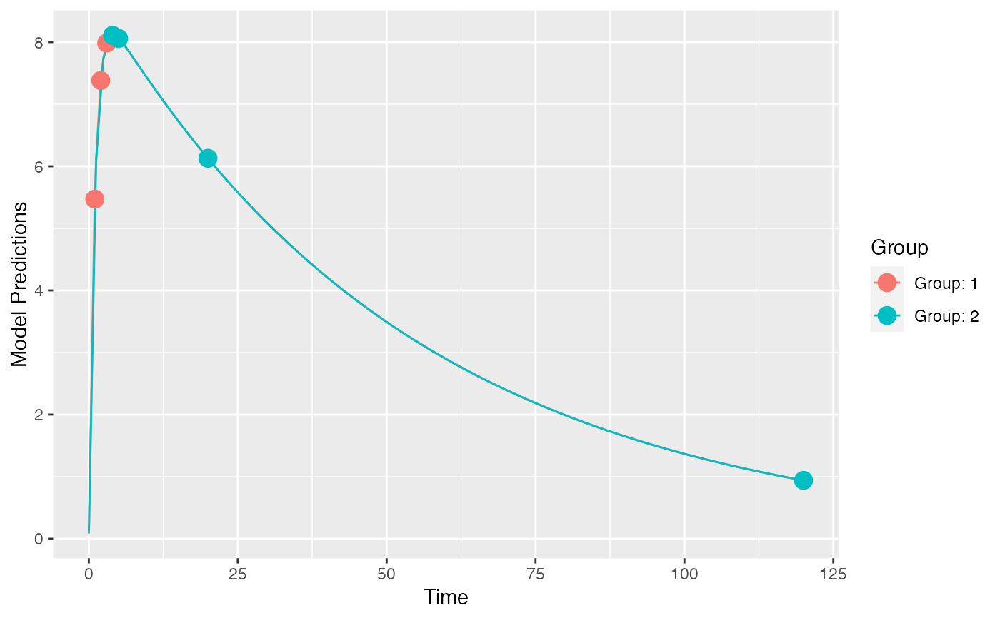

optimize HOW MANY n there should be to achieve efficiency=1 compared to a reference OFV
optimize_n_eff(poped.db, ofv_ref, norm_group_fim = NULL, ...)
| poped.db | A PopED database. |
|---|---|
| ofv_ref | A reference OFV value to compare to. |
| norm_group_fim | The FIM per individual in each design group. If |
| ... | Arguments passed to |
The number of individuals needed.
# 2 design groups with either early or late samples poped.db <- create.poped.database(ff_fun=ff.PK.1.comp.oral.sd.CL, fg_fun=function(x,a,bpop,b,bocc){ parameters=c(CL=bpop[1]*exp(b[1]), V=bpop[2]*exp(b[2]), KA=bpop[3]*exp(b[3]), Favail=bpop[4], DOSE=a[1]) return(parameters) }, fError_fun=feps.add.prop, bpop=c(CL=0.15, V=8, KA=1.0, Favail=1), notfixed_bpop=c(1,1,1,0), d=c(CL=0.07, V=0.02, KA=0.6), sigma=c(0.01,0.25), xt=list(c(1,2,3),c(4,5,20,120)), groupsize=50, minxt=0.01, maxxt=120, a=70, mina=0.01, maxa=100) plot_model_prediction(poped.db)#> $ofv #> [1] 57.34239 #> #> $fim #> CL V KA d_CL d_V d_KA #> CL 20100.83363 100.60318 57.19595 0.0000000 0.0000 0.0000000 #> V 100.60318 47.77375 -18.43690 0.0000000 0.0000 0.0000000 #> KA 57.19595 -18.43690 80.55401 0.0000000 0.0000 0.0000000 #> d_CL 0.00000 0.00000 0.00000 2019.7601648 73.4525 0.6961553 #> d_V 0.00000 0.00000 0.00000 73.4524996 48705.8108 117.2176534 #> d_KA 0.00000 0.00000 0.00000 0.6961553 117.2177 51.8762750 #> SIGMA[1,1] 0.00000 0.00000 0.00000 1428.9648684 31892.5113 417.9515724 #> SIGMA[2,2] 0.00000 0.00000 0.00000 274.2990996 640.9862 10.3145690 #> SIGMA[1,1] SIGMA[2,2] #> CL 0.0000 0.00000 #> V 0.0000 0.00000 #> KA 0.0000 0.00000 #> d_CL 1428.9649 274.29910 #> d_V 31892.5113 640.98623 #> d_KA 417.9516 10.31457 #> SIGMA[1,1] 353788.5599 6967.23365 #> SIGMA[2,2] 6967.2337 236.40519 #> #> $rse #> CL V KA d_CL d_V d_KA SIGMA[1,1] #> 4.742175 1.908239 11.706099 38.149149 23.388391 23.297863 28.859652 #> SIGMA[2,2] #> 48.150485 #># what are the optimal proportions of # individuals in the two groups in the study? (n_opt <- optimize_groupsize(poped.db))#> Initial proportions: #> 0.5 0.5 #> #> initial value -57.342391 #> final value -57.747204 #> converged #> #> Optimized proportions: #> 0.2984998 0.7015002 #> #> Optimized number of individuals per group #> OFV: 57.74718 #> 30 70 #>#> $initial_props #> [1] 0.5 0.5 #> #> $initial_ofv #> [1] 57.34239 #> #> $opt_props #> [1] 0.2984998 0.7015002 #> #> $opt_ofv_with_props #> [1] 57.7472 #> #> $opt_n_per_group #> [1] 30 70 #> #> $opt_ofv_with_n #> [1] 57.74718 #># How many individuals in the original design are needed to achieve an # efficiency of 1 compared to the optimized design with n=100? optimize_n_eff(poped.db, ofv_ref=n_opt$opt_ofv_with_n)#> [1] 105.19